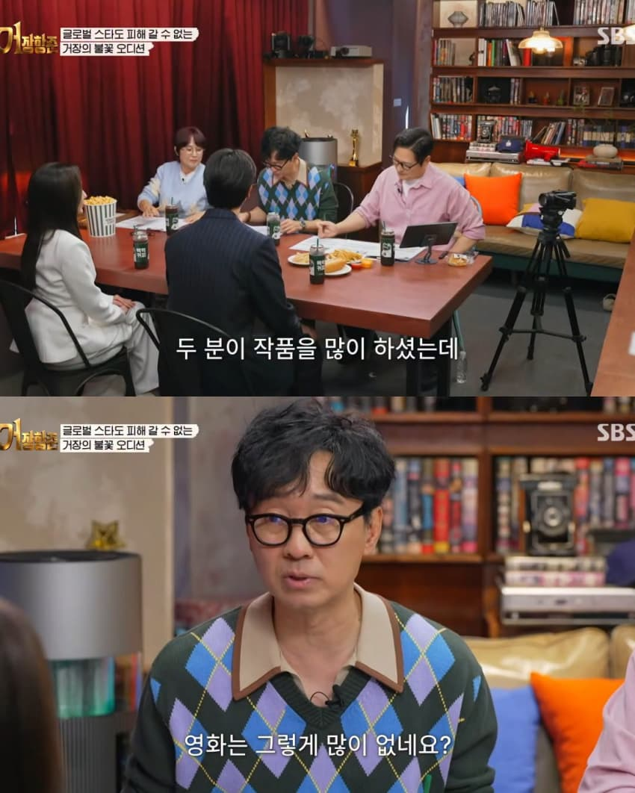
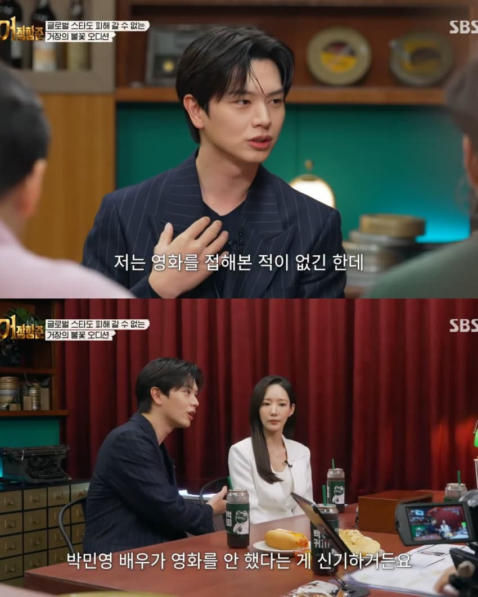
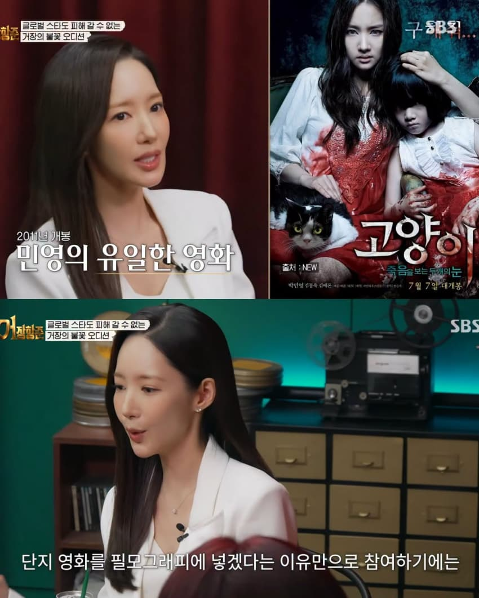
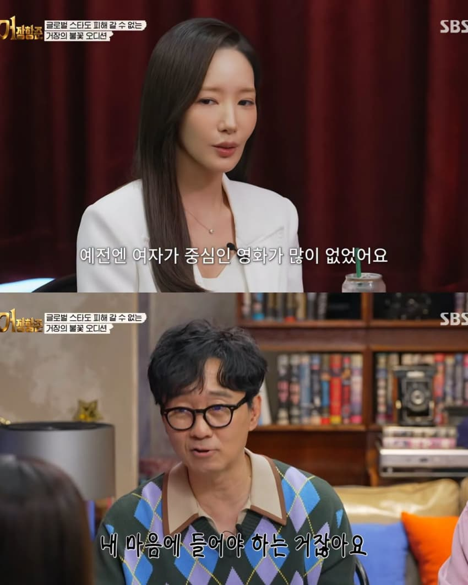
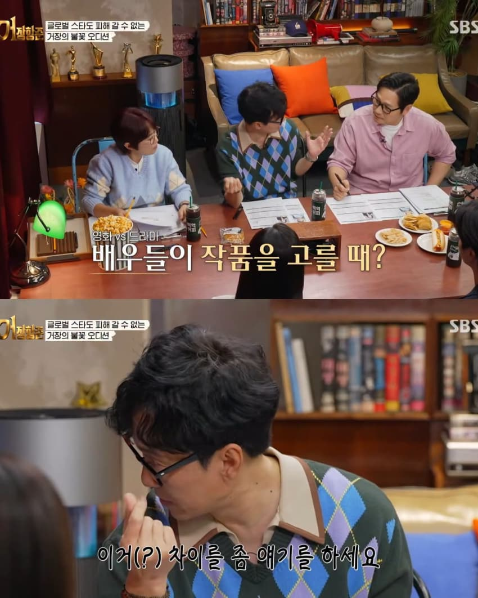
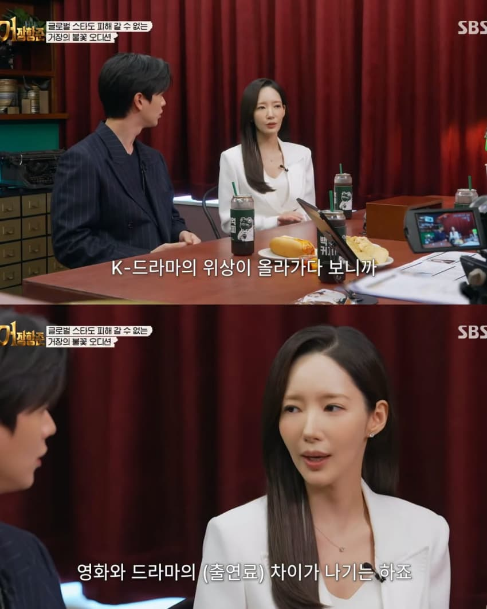
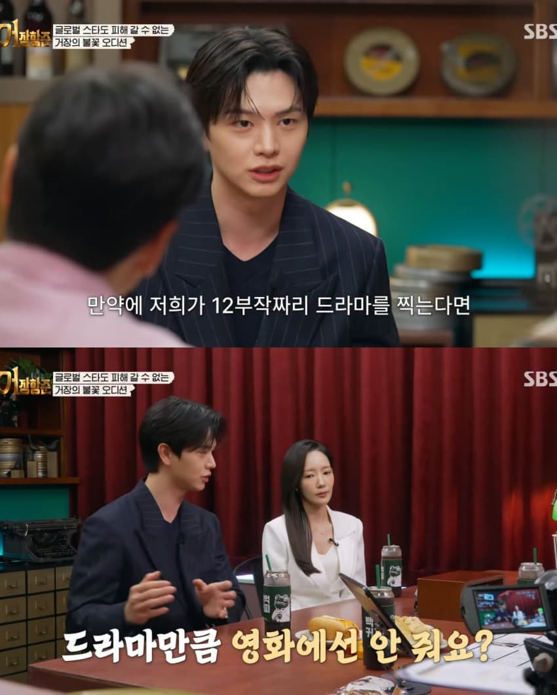
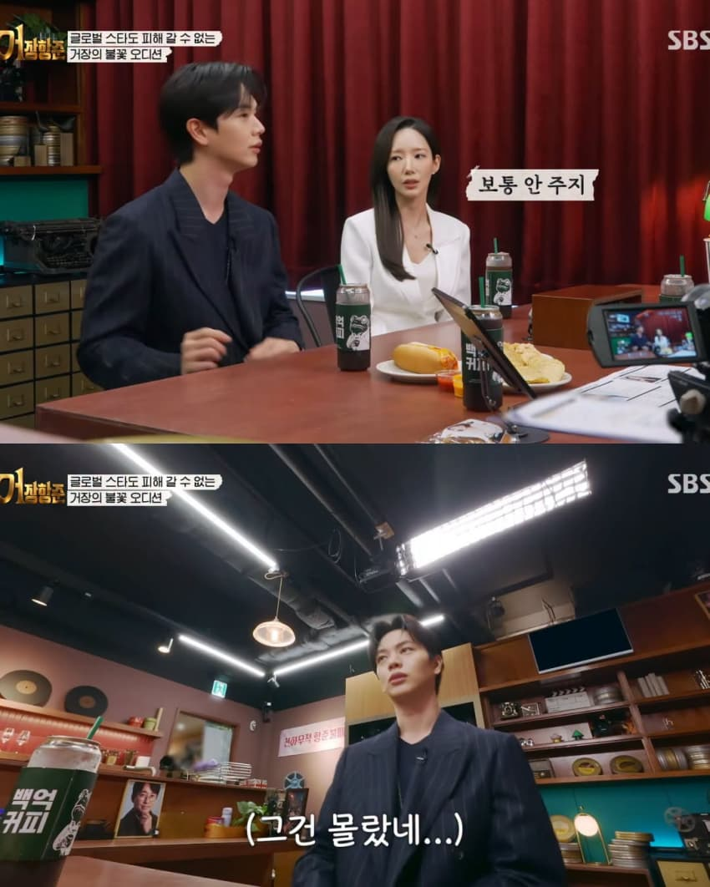
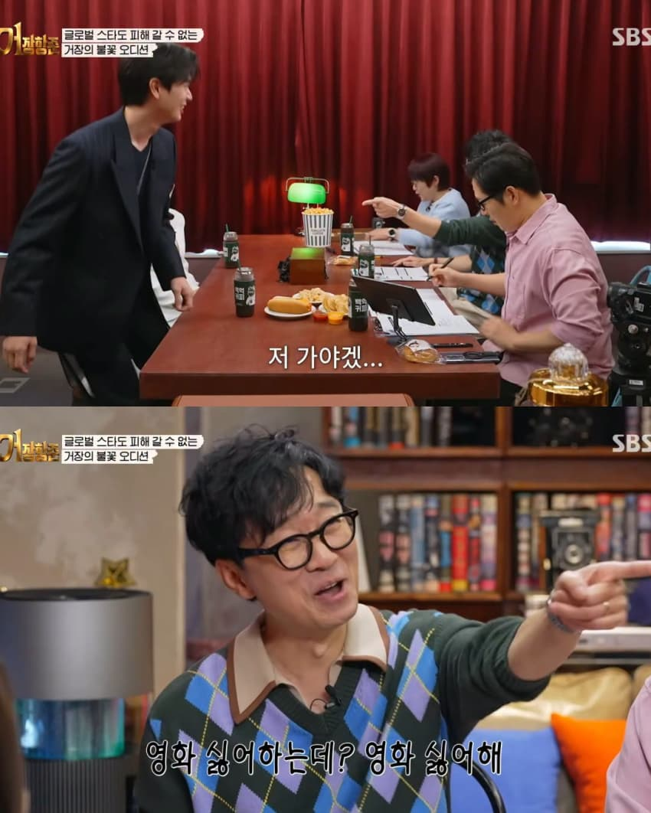
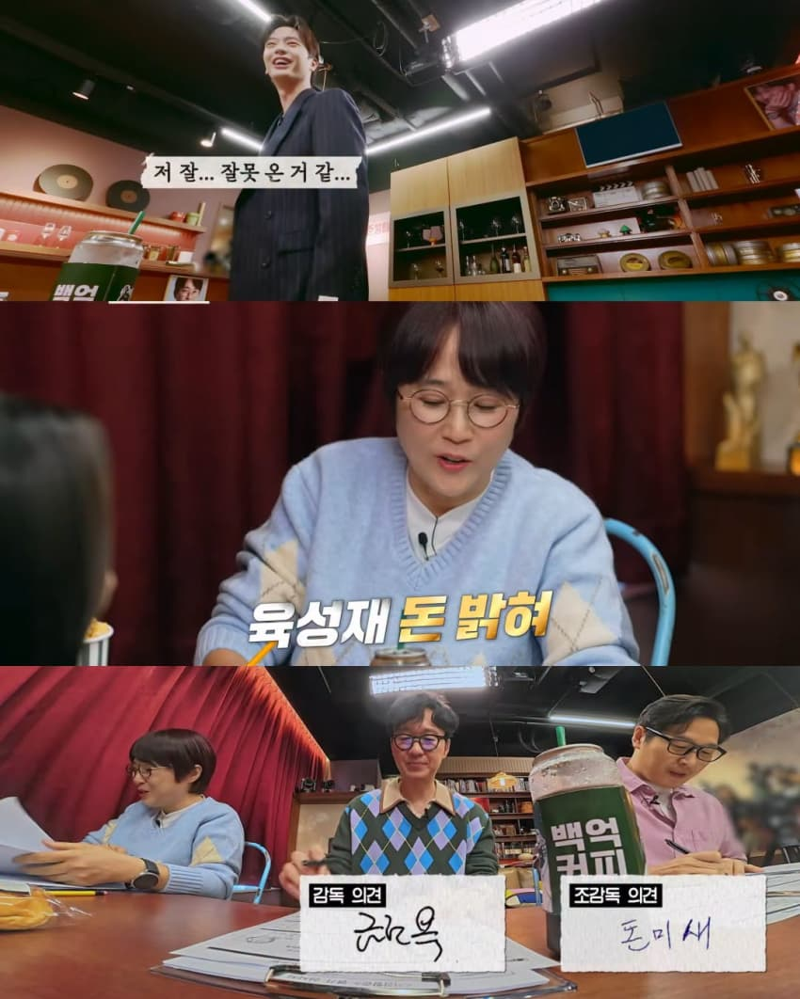

댓글
수집 당시 댓글 168개
ㅇ2ㅇ · 11.13 02:35:22
· ㅇㅇ · 11.13 02:42:40
· ㄹㄱㄴ · 11.13 07:06:14
ㅇㅇ · 11.13 02:35:58
ㅇㅇ · 11.13 02:47:26
· 니엄마자쿰 · 11.13 03:01:13
· ㅇㅇ · 11.13 04:04:31
· ㅁㅁㅁ · 11.13 10:46:00
· ㅇㅇ · 11.13 16:10:54
ㅇㅇ · 11.13 03:19:48
· ㅁㅁㅁ · 11.13 10:46:23
· ㅇㅇ · 11.13 12:40:45
· ㅇㅇ · 11.13 15:39:46
ㅅㅅ · 11.13 03:23:23
ㅇㅇ · 11.13 03:35:25
거장항준?
쪽팔리지도
않나?
ㅇㅇ · 11.13 04:05:27
· ㅁㅁㅁ · 11.13 10:55:26
ㅇㅇ · 11.13 04:22:02
ㅇㅇ · 11.13 04:23:24
ㅇㅇ · 11.13 04:24:25
ㅇㅇ · 11.13 04:24:54
ㅇㅇ · 11.13 04:38:14
ㅇㅇ · 11.13 04:46:46
ㅇㅇ · 11.13 04:54:08
ㅇㅇ · 11.13 05:15:09
ㅇㅇ · 11.13 05:18:46
ㅇㅇ · 11.13 05:32:23
ㅇㅇ · 11.13 05:34:46
000 · 11.13 05:46:54
· ㅇㅇ · 11.13 18:19:20
aa · 11.13 05:46:57
ㅇ.....ㅇ · 11.13 06:04:25
도토리2개 · 11.13 06:05:47
ㅇㅇ · 11.13 06:17:59
ㅇㅇ · 11.13 06:30:40
ㅇㅇ · 11.13 06:31:48
디오니소스 · 11.13 06:33:15
ㅇㅇ · 11.13 06:46:01
... · 11.13 06:52:53
ㅇㅇ · 11.13 07:05:04
· ㅇㅇ · 11.13 07:10:01
모코코 · 11.13 07:07:03
· ㅇㅇ · 11.13 08:03:31
ㅇㅇㅇ · 11.13 07:11:00
ㄹㄱㄴ · 11.13 07:13:36
ㅇㅇ · 11.13 07:13:43
· ㅇㅇ · 11.13 15:40:18
ㅇㅇ · 11.13 07:14:46
· ㅇㅇ · 11.13 18:18:37
ㅇㅇ · 11.13 07:20:55
· ㅇㅇ · 11.13 07:58:58
ㅇㅇ · 11.13 07:25:16
듀퀴대장 · 11.13 07:28:28
딱등 · 11.13 07:44:02
Honsound · 11.13 07:48:06
GOTOKYO · 11.13 07:52:49
· ㅇㅇ · 11.13 12:41:45
· ㅇㅇ · 11.13 15:41:03
ㅇㅇ · 11.13 08:02:00
ㅇㅇ · 11.13 08:09:07
ㅇㅇ · 11.13 08:13:27
ㅇㅇ · 11.13 08:13:57
ㅇㅇ · 11.13 08:18:43
ㅇㅇ · 11.13 08:51:52
· ㅇㅇ · 11.13 08:52:01
ㅇㅇ · 11.13 08:53:55
ㅇㅇ · 11.13 09:04:01
· ㅇㅇ · 11.13 09:32:11
ㅇㅇㅇㅇ · 11.13 09:07:15
ㅇㅇ · 11.13 09:41:27
ㅁㅁㅁ · 11.13 10:57:46
ㅇㅇ · 11.13 10:58:43
· ㅇㅇ · 11.13 13:48:49
ㅇㅇ · 11.13 11:38:29
ㅇㅇ · 11.13 12:04:53
패배머신 · 11.13 12:06:14
· ㅇㅇ · 11.13 15:41:45
ㅇㅇ · 11.13 12:20:00
ㅇㅇ · 11.13 12:50:38
00 · 11.13 12:58:38
ㅇㅇ · 11.13 13:25:29
ㅇㅇ · 11.13 13:34:26
ㅇㅇ · 11.13 13:38:07
ㅇㅇ · 11.13 13:58:39
ㅇㅇ · 11.13 14:43:52
ㅇㅇ · 11.13 14:47:12
VWVWV · 11.13 14:50:45
ㅇㅇ · 11.13 15:20:14
ㅇㅇ · 11.13 16:11:04
ㅇㅇ · 11.13 17:04:16
ㅇㅇ · 11.13 17:10:20
· ㅇㅇ · 11.13 18:09:43
ㅇㅇ · 11.13 18:05:25
ㅇㅇ · 11.13 18:11:26
ㅇㅇ · 11.13 18:17:40
ㅇㅇ · 11.13 18:37:12
ㅇㅇ · 11.13 18:37:17
ㅇㅇ · 11.13 18:37:21
ㅇㅇ · 11.13 18:37:26
ㅇㅇ · 11.13 18:37:32
restinpieceofcake · 11.13 01:40:50
3dd · 11.13 01:41:03
· ㅇㅇ · 11.13 02:01:34
· ㅇㅇ · 11.13 02:20:52
· 니엄마자쿰 · 11.13 03:00:31
· ㅇㅇ · 11.13 03:09:50
· ㅇㅇ · 11.13 05:17:21
· ㅇㅇ · 11.13 06:09:33
· ㅇㅇ · 11.13 07:47:26
ㅇㅇ · 11.13 01:42:01
ㅇㅇ · 11.13 01:42:40
かなたん · 11.13 01:43:28
· 메챠코 · 11.13 01:43:59
· 말랑보추 · 11.13 01:45:15
· ㅇㅇ · 11.13 01:46:23
메챠코 · 11.13 01:43:50
· 말랑보추 · 11.13 01:45:06
· ㅇㅇ · 11.13 01:46:40
· かなたん · 11.13 01:50:07
ㅇㅇ · 11.13 01:44:28
· ㅇㅇ · 11.13 03:16:32
· ㄹㄱㄴ · 11.13 07:04:49
· ㅇㅇ · 11.13 09:15:09
· ㅁㅁㅁ · 11.13 10:44:44
말랑보추 · 11.13 01:44:51
· ㅇㅇ · 11.13 01:46:34
· かなたん · 11.13 01:50:16
· 메챠코 · 11.13 01:51:14
ㅇㅇ · 11.13 01:46:31
ㅇㅇ · 11.13 01:46:51
· 말랑보추 · 11.13 01:47:32
· かなたん · 11.13 01:50:28
· 메챠코 · 11.13 01:51:35
· ㅇㅇ · 11.13 04:24:48
ㅇ · 11.13 01:48:52
· ㅇ · 11.13 01:49:09
· ㅇㅇ · 11.13 03:10:49
· ㅇㅇㅇㅇ · 11.13 11:09:43
구라핑 · 11.13 01:49:15
ㅇㅇ · 11.13 01:50:03
ㅇㅇ · 11.13 01:51:19
· ㅇㅇ · 11.13 02:02:49
· ㅇㅇ · 11.13 09:01:52
ㅇㅇ · 11.13 01:54:09
병신짱깨 · 11.13 02:01:12
· ㅇㅇ · 11.13 06:52:40
· ㅇㅇ · 11.13 09:01:39
· ㅇㅇ · 11.13 10:26:36
· ㅇㅇ · 11.13 10:27:19
· ㅇㅇ · 11.13 10:28:45
ㅇㅇ · 11.13 02:12:23
ㅇㅇ · 11.13 02:14:08
ㅇㅇ · 11.13 02:16:07
· 디디 · 11.13 13:36:09
ㅇㅇ · 11.13 02:25:13
· ㅇㅇ · 11.13 15:39:17
ㅇㅇ · 11.13 02:27:50
· ㅇㅇ · 11.13 12:40:02
ㅇㅇ · 11.13 02:30:01
ㅇㅇ · 11.13 02:31:51
ㅇㅇ · 11.13 02:32:45
· ㅇㅇ · 11.13 02:33:37
· ㅇㅇ · 11.13 02:44:38
· ㅇㅇ · 11.13 03:45:33
· APPLLY · 11.13 05:33:08
· ㅇㅇ · 11.13 06:13:52
· ㅇㅇ · 11.13 06:54:07
ㅇㅇ · 11.13 02:34:47